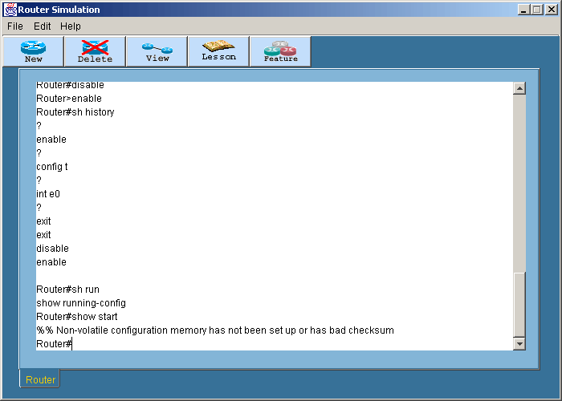
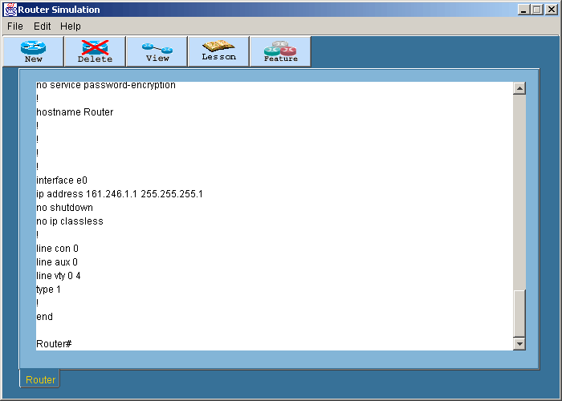
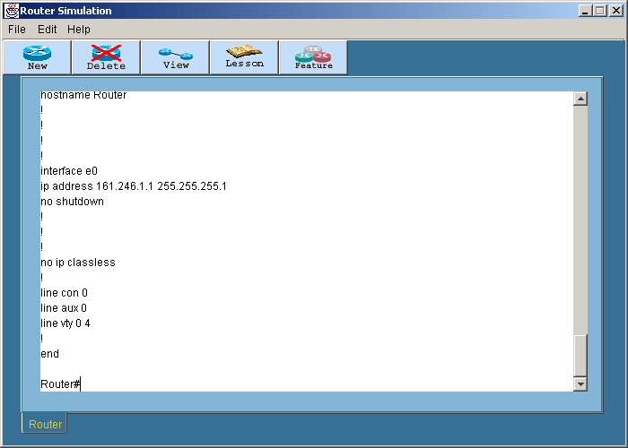
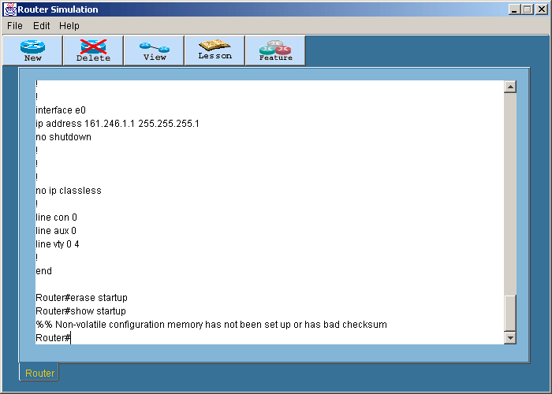

Commands for starting and saving configurations
การทดลองนี้ทำเพื่อบันทึกค่าที่เราตั้งค่าไว้ทั้งหมด
และโหลดค่าที่ตั้งไว้ออกมา
- ล็อกอินเข้าเราเตอร์ที่ต้องการ หลังจากนั้นเข้าสู่ Privilege โหมดโดยพิมพ์คำสั่ง
En หรือ Enable
แล้วกด Enter
- สำหรับการดูคอนฟิคที่เก็บอยู่ใน NVRAM จะใช้คำสั่งsh
start หรือ show startup-config แล้วกด
Enter ถ้าไม่มีเก็บไว้จะแสดงข้อความ error

- ทำการบันทึกค่าที่ตั้งไว้ใน NVRAM ที่เรียกกันว่า startup-config ให้พิมพ์
copy run start หรือ copy
running-config startup-config แล้วกด Enter
- พิมพ์ sh start หรือ show
start แล้วกด Enter

- พิมพ์ sh run หรือ show
run แล้วกด Enter

- พิมพ์ erase start แล้วกด Enter
- พิมพ์ sh start แล้วกด Enter จะเจอ ข้อความ
error

สำหรับโหมดการทำงานทั้งหมดของเราเตอร์สามารถดูได้ในสรุปคำสั่งทั้งหมด
|
 Lesson 3
Lesson 3